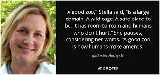
{kind=link}
The purpose of modern zoos is to entertain and educate the public, and also to preserve and protect various animal species and to provide a safe habitat for these animals. Often the animals housed in zoos are animals that for various reasons cannot survive on their own in the wild. This may be because they are physically disabled in some way, or because they did not learn proper survival skills while young due to interaction with humans or separation from their parent or herd. This may also be because their natural habitat in the wild is endangered by the encroachment of humans or sometimes even due to changes in climate.
Modern zoos also provide opportunities for scientific research and education. They provide an opportunity for many people to see and experience animals that they would otherwise not be able to see in person. This can help promote conservation and concern for animals amongst the broader public. Zoo websites provide a wealth of educational information and activities for everyone from young children to college students and professional researchers. Many of the zoos listed above have engaging activities available for elementary aged children, and provide group tours for schools and summer camps. They also have more in-depth resources, such as conservation blogs for adults as well. Some of the features of each of these zoos is provided below.
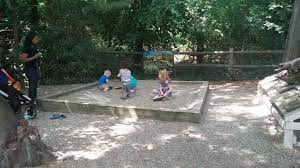
{kind=link}
The Stone Zoo is a small zoo located in Stoneham, MA. It is a very manageable size, even for young visitors, and includes a variety of features designed for kids. For the budding paleontologist, there is a permanent "Dino Dig" exhibit as well as a "TRex Adventure" special exhibit for summer 2021. There is an onsite playground and hot food available at the Safari Grill. There is also a number of reptiles and amphibians to see at the Animal Discovery Center. This is an especially good venue for elementary and pre-school aged children that are very interested in dinosaurs.
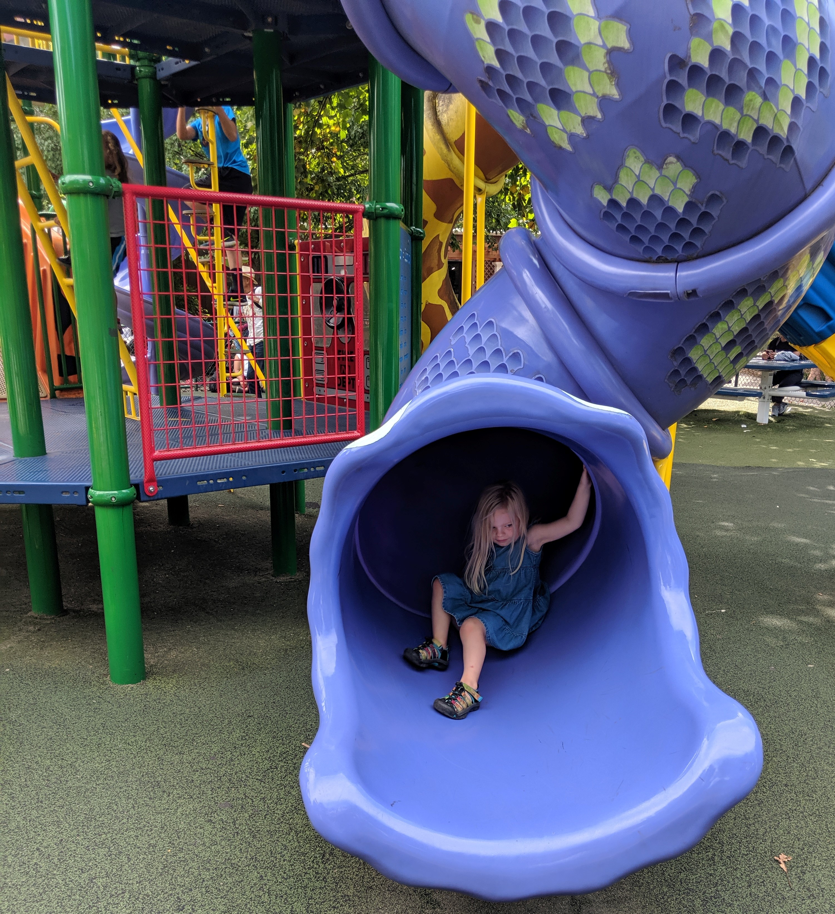
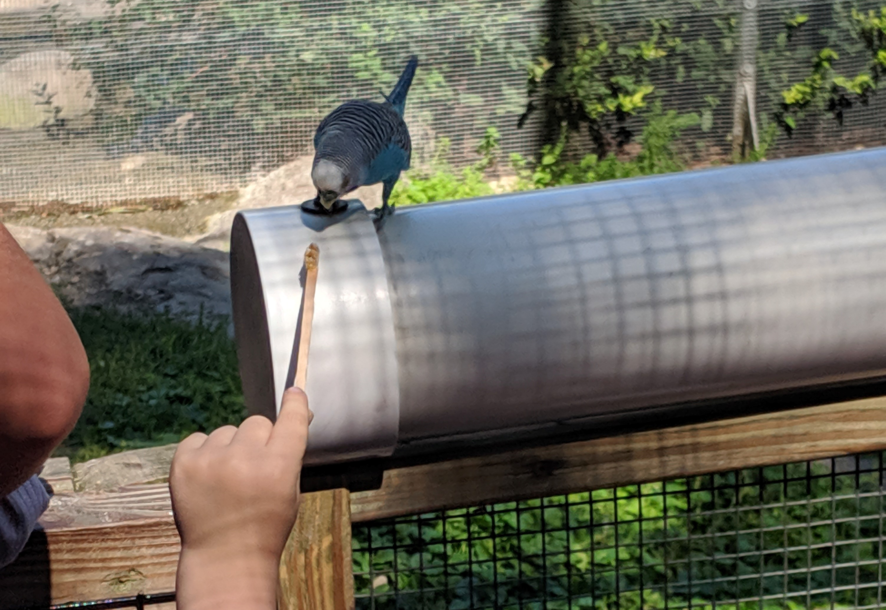
The Franklin Park Zoo is a large zoo located in Boston, MA. While the zoo itself is large, most of the space is taken up as large habitats for the bigger animals. The paths for visitors make up an easily walkable space, and are fully accessible for strollers and wheelchairs. There is a very large playground for children, with a separate area for toddlers to play on smaller equipment. Visitors can pet goats and get up close with other farm animals in the "Franklin Farm" exhibit, and can feed small colorful budgies in the "Aussie Aviary". The "Butterfly Hollow" exhibit resembles a magical fairyland with lovely butterflys nestled around colorful fairy houses. The Franklin Park Zoo is hosting the "Boston Lights: A Lantern Experience" special exhibit from July to mid-October of 2021. Large, lighted sculptures are assembled throughout the zoo, and are lit each evening from 6pm to 9:30pm. The Franklin Park Zoo is a really good venue for elementary aged kids who may need some active play to get out some extra energy because of the excellent playground.
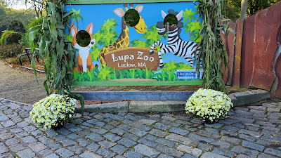
{kind=link}
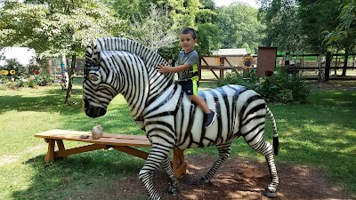
The Lupa Zoo is a small, family-friendly zoo dedicated to conservation and wildlife education located in Ludlow, MA. It is easily accessible for young children, and has a small playground, carousel, and train ride for kids, as well as a dining area. The staff are friendly, and there are a variety of animals to see. There is a petting zoo onsite, which allows children to get up close with domestic farm animals. This is a good choice for families that live in western Massachusetts who are looking for an opportunity for elementary and pre-school aged kids to really interact with and learn about animals.
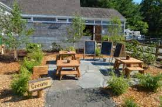
The Buttonwood Park Zoo is a small zoo located in New Bedford, MA. It is one of the oldest zoos in the United States, and has been in operation for more than 125 years. The Zoo features more than 180 species, including Asian elephants, red pandas, bison, cougars, black bears, eagles, seals, otters, South American primates and numerous waterfowl species. The zoo includes a carousel and small train, and the Bear's Den Cafe is open for dining. Families with young children will also enjoy Charlie’s Nature Play space. This is a nature play area designed to stimulate a child’s natural curiosity and creativity through hands-on activities. Buttonwood is a good choice for younger children due to its size, and the Nature Play space provides an excellent educational opportunity for pre-school to elementary aged kids.
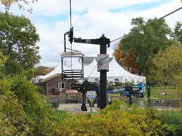
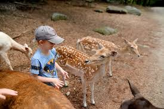
The Southwick Park Zoo is the largest zoo in New England, and is located in Mendon, MA. It is home to over 850 animals including lions, tigers, giraffes, chimpanzees, white rhinos, two-toed sloths, and more. The zoo offers other adventures and entertainment such as the Skyfari Sky Ride, Woodland Express Train, Soaring Eagle Zip Line, 35-acre Deer Forest, petting zoo, walk-through aviary, and the Rainforest Adventure Maze. During the summer 2021 season, the zoo will be illuminated by hundreds of lanterns as part of the "Festival of Illumination". Southwick would be entertaining for young children, but would also be an excellent choice for middle and high-school aged kids due to additional rides and attractions more similar to an amusement park.
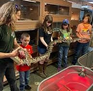
.webp){kind=link}
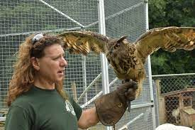
The Animal Adventures Family Zoo and Rescue Center is an exotic animal rescue located in Bolton, MA. Their mission is to give a home to unwanted and unable to be cared for animals while educating the public about these animals. They travel to many schools, libraries, colleges, and other functions to provide wildlife education, and accept unwanted pets and other animals. If you are interested to learn more about exotic animals, but object to animals being intentionally removed from their natural habitat for entertainment purposes, Animal Adventures might be a good venue for you because of their focus on providing safe homes for rescued animals who are unable to return to the wild. This would also be an excellent venue for homeschool groups looking for educational enrichment in conservation and herpetology due to Animal Adventures "Zoo Academy".